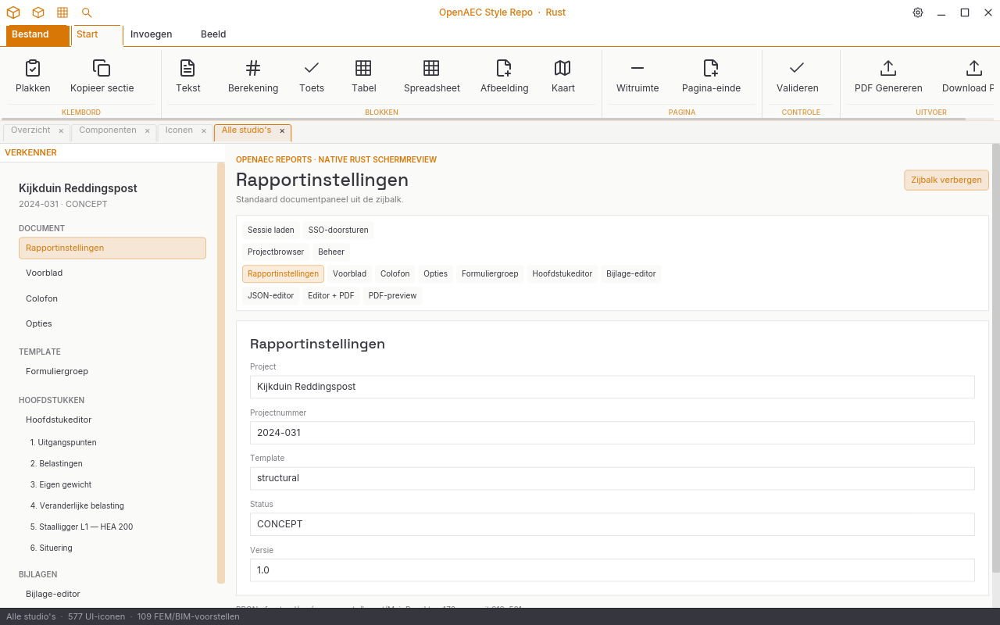
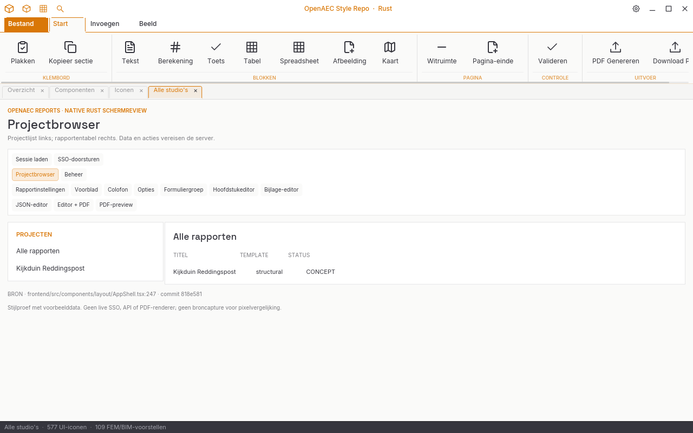
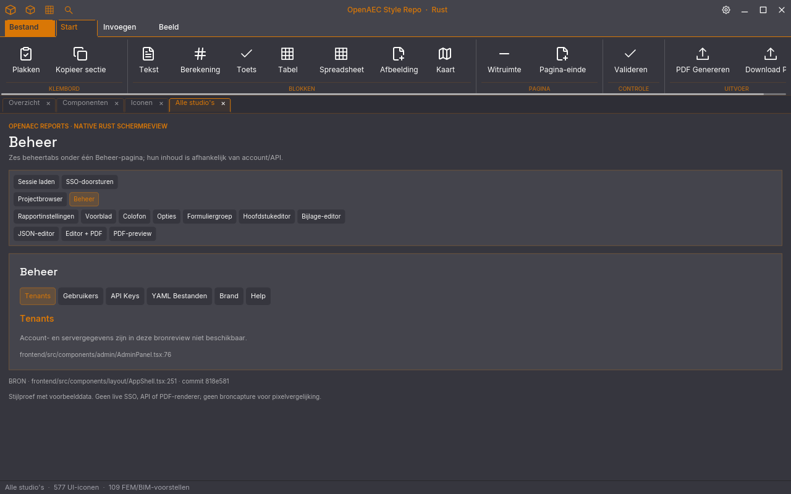
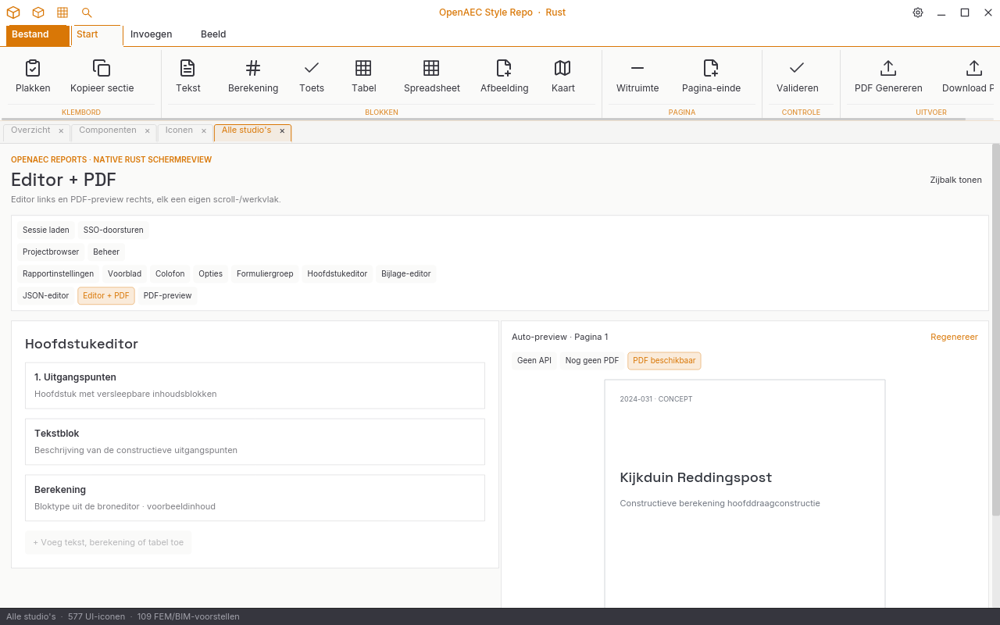
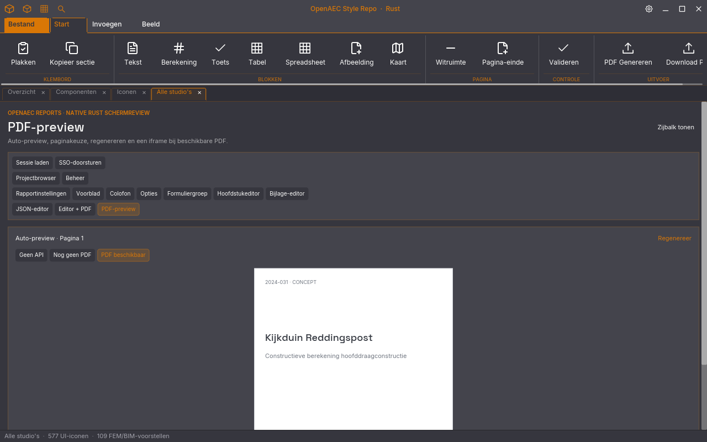

Bronbewijs
De scherminhoud is een maat- en routeproef met voorbeeldgegevens uit schemas/example_structural.json. Er is geen bronruntime-screenshot voor pixelverschil. SSO, API, PDF-iframe en datamutaties werken hier niet.
Dezelfde routes in de native Rust Style Repo
Software-renders op 1280 × 800 px van de gedeelde OpenAEC-UI-crate. Beoordeel de proporties en leesbaarheid naast de interactieve HTML-proef; de Reports-backend en PDF-renderer zijn nog niet gekoppeld.









